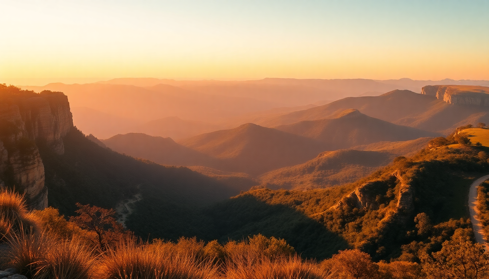

Best Sydney Day Trips: Blue Mountains, Hunter Valley & Royal National Park

I live in Sydney, and the best part of this city is how fast you can escape it. Within an hour you’re in a national park, a wine region, or a mountain range that feels a world away. Here’s what I’ve learned from doing these three trips multiple times — what’s worth your time, what’s overhyped, and how to actually pull it off in a single day.
Which day trip from Sydney is best for first-timers?
The Blue Mountains is the obvious answer, and for good reason. It’s the most dramatic landscape within two hours of the city. You get real hiking, proper lookouts, and a town (Katoomba) that actually functions as a day-trip base.
I’ve done the Scenic World loop (cableway, railway, walkway) and it’s fine — but crowded on weekends. Skip the Scenic Railway if you hate queuing for 45 minutes. Instead, walk the Prince Henry Cliff Walk from Echo Point to Leura. It’s 4.5 km, mostly flat, and you get the Three Sisters view without the tourist scrum.
Key stops on a Blue Mountains day trip:
- Echo Point Lookout — the classic Three Sisters view, arrive before 9am to avoid crowds
- Leura Cascades — a short, shaded walk to a waterfall; better than Wentworth Falls for a quick stop
- The Carrington Hotel in Katoomba — grab a beer on the veranda, not a meal (food is average)
- Station Bar & Woodfired Pizza in Wentworth Falls — actually good pizza, no pretence
- Katoomba Falls — accessed via a 20-minute loop from the Scenic World carpark, free and quiet
How do I do the Hunter Valley wine tour in one day?
You can, but you need a plan. The Hunter Valley is about 2.5 hours north of Sydney by car, and public transport is slow. I’ve done the day trip with a hired driver and with a tour group. The tour group (through GetYourGuide) was easier because they handled the tasting fees and lunch, but you lose flexibility.
If you drive yourself, focus on Pokolbin. That’s where the density of cellar doors is highest. Start at Brokenwood Wines for their semillon — it’s the varietal the Hunter does best. Then hit Tyrrell’s Wines for the history (they’ve been pouring since 1858). Lunch at Muse Kitchen — it’s a converted shed, but the lamb shoulder is the best value meal in the valley.
My Hunter Valley one-day route:
- Brokenwood Wines — semillon tasting, $10 fee waived with purchase
- Tyrrell’s Wines — ask for the Vat 1 semillon, it’s the benchmark
- Muse Kitchen — book ahead, the pork belly is solid
- Audrey Wilkinson — best views of the valley from their tasting room
- Hunter Valley Chocolate Company — skip the wine and cheese pairing here, just buy the dark chocolate
What’s the best walk in Royal National Park?
The Coast Track is the headline act. It’s 26 km from Bundeena to Otford, and you don’t do the whole thing in a day unless you’re training for something. The best short section is from Bundeena to Wedding Cake Rock and back — about 8 km round trip, mostly flat, with clifftop views that rival the Great Ocean Road.
I did this on a Tuesday in February and saw maybe 15 people. The rock itself (Wedding Cake Rock) is fenced off because people keep falling off it, but the photo spot from the fence line is fine. The real highlight is the stretch between Marley Beach and Little Marley Beach — you get a lagoon, a surf beach, and a headland in under 2 km.
Essential stops for a Royal National Park day trip:
- Bundeena Ferry from Cronulla — runs hourly, $7.50 one-way, no booking needed
- Wedding Cake Rock — fenced but still worth the detour for the coastal backdrop
- Marley Beach — patrolled in summer, strong rips, swim at your own risk
- Garie Beach — the only place in the park with a proper kiosk (cash only, average pies)
- Burning Palms — a nudist beach if that’s your thing, otherwise skip it
When is the best time to visit each destination?
Blue Mountains is best in autumn (March to May) or spring (September to November). Winter is cold — Katoomba sits at 1,000 metres and drops to 2°C at night. Summer can be hot but the altitude keeps it bearable. Avoid public holidays and school holidays; the Scenic World queues get ridiculous.
Hunter Valley is fine year-round, but harvest season (January to March) means the vines are active and the cellar doors are busier. Summer weekends are packed with bachelor parties. Go midweek if you can. Winter is quiet and the fireplaces at Muse Kitchen and Tyrrell’s make it cosy.
Royal National Park is best in shoulder seasons. Summer is hot, humid, and the flies are relentless. Winter days are mild (18°C) and the coastal walk is actually pleasant. I did it in July and didn’t break a sweat. Avoid after heavy rain — the track gets muddy and the ferry service sometimes cancels.
How do I get to each place without a car?
Blue Mountains: Catch the Blue Mountains Line train from Central Station to Katoomba. It takes about two hours and runs hourly. Once there, the Hop-on Hop-off Bus (operated by Trolley Tours) covers Echo Point, Scenic World, and Leura for $25 per day. I’ve used it twice and it works, though the last bus leaves Scenic World at 4pm.
Hunter Valley: This is the hardest without a car. Tours are the easiest option. I’ve done the Hunter Valley Wine & Cheese Tour from GetYourGuide — it picks you up from Central Station, includes four cellar doors and lunch, and drops you back by 6pm. Public buses exist (the Rover Coaches service from Maitland) but they’re infrequent and don’t reach the Pokolbin cellar doors directly.
Royal National Park: Take the train from Central to Cronulla, then the ferry to Bundeena. The ferry runs every 30-60 minutes depending on the season. From the Bundeena wharf, the Coast Track starts immediately. No car needed, and it’s the cheapest day trip on this list — about $15 round trip.
What should I pack for these day trips?
Blue Mountains: Layers. I wore a t-shirt and a fleece in November and was fine, but the temperature drops 6-8°C from the base to the escarpment. Good walking shoes — the Prince Henry Cliff Walk is paved but uneven in sections. Bring water; there are no refill stations on the trail.
Hunter Valley: Sunscreen and a hat. The valley gets full sun and most cellar doors have outdoor seating. A cooler bag if you’re buying bottles. Don’t bring a full outfit change for a winery dinner — most places are casual.
Royal National Park: Sunscreen, insect repellent, and at least 1.5 litres of water per person. There’s no tap water on the Coast Track. A swimsuit if you plan to hit Marley Beach. The track is sandy in sections, so trail runners or sturdy sneakers are better than sandals.
FAQ
Is the Blue Mountains worth it if I only have half a day? Yes, but only if you skip Scenic World. Take the 7am train from Central, arrive at Katoomba by 9am, walk to Echo Point and do the Prince Henry Cliff Walk to Leura. Grab a coffee at Leura Garage, then catch the 1pm train back. You’ll see the Three Sisters, the escarpment, and a waterfall without rushing.
Can I visit Hunter Valley and Blue Mountains in one day? No. They’re in opposite directions and each requires at least 4-5 hours on the ground. Pick one. If you’re desperate, do Blue Mountains in the morning and drive to Hunter Valley for an afternoon tasting, but you’ll be exhausted and the driving is 5 hours total.
Is Royal National Park safe for solo travellers? Yes. The Coast Track is well-marked and sees regular foot traffic, especially on weekends. I’ve walked it solo twice. Just watch your footing near the cliffs, keep your phone charged, and let someone know your return ferry time. Mobile reception is patchy between Bundeena and Garie Beach.
Conclusion
- Blue Mountains is the best all-rounder — dramatic scenery, proper walks, and easy train access from Sydney.
- Hunter Valley requires a car or a tour, but the semillon at Brokenwood and Tyrrell’s is worth the drive.
- Royal National Park is the cheapest and quietest option — the Coast Track from Bundeena to Wedding Cake Rock is a half-day walk that feels remote despite being 45 minutes from the city.
- Go midweek to avoid crowds at all three. Weekends at Scenic World and Hunter Valley cellar doors are a mess.
- Skip the tourist-trap restaurants in Katoomba and Leura — the pub food at The Carrington is average; eat at Station Bar in Wentworth Falls instead.